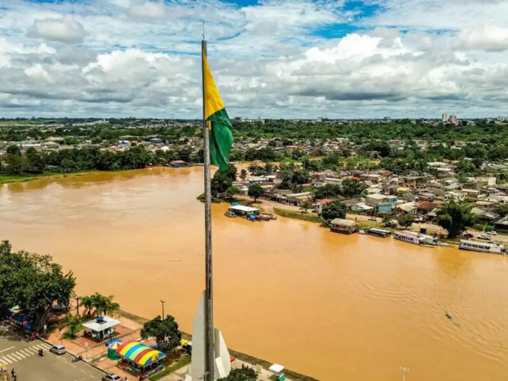

O Acre é um estado localizado na região Norte do Brasil, conhecido por sua vasta área de floresta amazônica e por sua grande importância ambiental e cultural. Sua capital é Rio Branco, que concentra boa parte da população e das atividades econômicas do estado. O Acre possui forte ligação com a história da extração da borracha e ficou marcado pela atuação de Chico Mendes, defensor da preservação da floresta e dos direitos dos seringueiros. Além disso, o estado apresenta rica biodiversidade, tradições culturais variadas e uma economia baseada principalmente no extrativismo, na agricultura e na pecuária.

Voltar